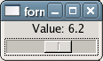

Signal which allows the display value of the scale to be changed.
A signal handler can be connected to this signal to allow the display value of the scale to be changed from the default. The callback will be passed both the scale and the current value. The callback should return a string representing the value as it is to be displayed.
Example 110. Formatting the Value of a Scale
<?php
// Callback to format the value of the scale.
function format_value($scale, $value)
{
return 'Value: ' . $value;
}
// Create a window.
$window = new GtkWindow();
// Set it up to close cleanly.
$window->connect_simple('destroy', array('Gtk', 'main_quit'));
// Create a scale.
$scale = new GtkHScale(new GtkAdjustment(5, 0, 10));
// Create a signal handler for the format-value signal.
$scale->connect('format-value', 'format_value');
// Add the scale to the window.
$window->add($scale);
// Show the window.
$window->show_all();
// Start the main loop.
Gtk::main();
?> |

Callback function